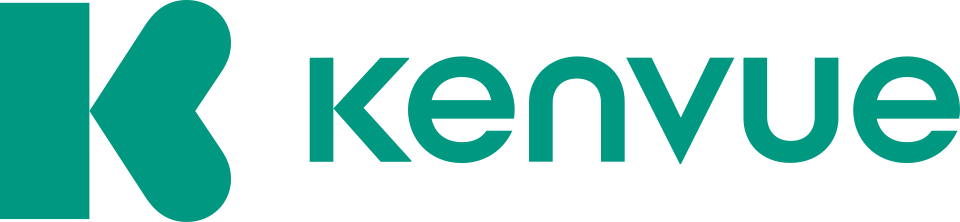

켄뷰 Kenvue
켄뷰(Kenvue)는 Johnson & Johnson의 Consumer Healthcare 부문에서 분리된 미국 소비자 건강 기업이다. 일반 소비자를 대상으로 하는 다수의 건강 브랜드를 보유한다.
최종 업데이트

켄뷰는 어떤 브랜드인가
켄뷰는 Johnson & Johnson의 소비자 건강 사업을 별도 회사로 분리하면서 출발했다. Johnson & Johnson이 제약과 의료기기 부문에 집중한 뒤 기존 소비자 브랜드 사업을 담당한다.
Aveeno, Band-Aid, Benadryl, Zyrtec, Johnson's, Listerine, Neutrogena, Tylenol, Visine 등을 보유한 포트폴리오 기업이다. Delaware에 법인으로 등록했으며 본사는 뉴저지주의 Skillman에서 Summit으로 이전했다.
2023년 5월 기업공개를 실시했고 이후 S&P 500 Dividend Aristocrats 지수에 편입했다. 2023년에는 phenylephrine 관련 위험 공시를 둘러싸고 투자자들이 증권 집단소송을 제기했다.
켄뷰는 어떻게 시작되고 성장했나
Johnson & Johnson은 2021년 11월 소비자 건강 부문을 별도 회사로 분사한다고 발표했다. 해당 사업은 2022년 2월 Delaware에서 JNTL, Inc.라는 임시 이름으로 법인 등록을 했다.
2022년 9월에는 지식을 뜻하는 스코틀랜드 영어 단어 ‘ken’과 시야를 연상시키는 ‘vue’를 결합해 회사명을 Kenvue로 확정했다. 2023년 5월 기업공개를 실시했으며 Johnson & Johnson은 직후 지분의 90% 이상을 유지했다.
같은 해 7월 Johnson & Johnson이 주식 교환을 통해 완전 분리를 마쳤다.
켄뷰의 브랜드 아이덴티티는 무엇인가
Johnson & Johnson의 소비자 건강 부문에서 독립해 다수의 기존 소비자 브랜드를 단일 기업 아래 보유한다는 점이 구분 지점이다.
켄뷰의 대표 제품과 서비스는 무엇인가
켄뷰는 Johnson & Johnson에서 이전받은 소비자 건강 브랜드를 중심으로 사업 포트폴리오를 구성한다. 주요 보유 브랜드는 Aveeno, Band-Aid, Benadryl, Zyrtec, Johnson's, Listerine, Lactaid, Mylanta, Neutrogena, Trosyd, Calpol, Tylenol, Visine이다.
이 브랜드들은 분사 이전 Johnson & Johnson의 Consumer Healthcare 부문이 운영하던 자산이며, 분사 뒤 켄뷰가 독립적으로 소유한다. 켄뷰는 이처럼 여러 소비자 건강 브랜드를 하나의 상장 기업 아래에서 관리한다.
켄뷰는 지금 어떤 상태인가
2025년 Thibaut Mongon의 해임 뒤 임시 CEO를 맡은 Kirk Perry가 같은 해 11월 정식 CEO로 선임됐다. Kimberly-Clark는 2025년 11월 3일 총기업가치 US$48.7 billion에 켄뷰를 인수한다고 발표했다.
인수 완료 목표 시점은 2026년 하반기이다.
켄뷰 로고는 어떻게 변해왔나
자주 묻는 질문
켄뷰는 어느 나라 브랜드인가요?
켄뷰는 미국의 헬스·제약 브랜드입니다.
켄뷰의 브랜드 아이덴티티는 무엇인가요?
Johnson & Johnson의 소비자 건강 부문에서 독립해 다수의 기존 소비자 브랜드를 단일 기업 아래 보유한다는 점이 구분 지점이다.
켄뷰의 대표 제품은 무엇인가요?
켄뷰는 Johnson & Johnson에서 이전받은 소비자 건강 브랜드를 중심으로 사업 포트폴리오를 구성한다.
켄뷰는 현재 어떤 상태인가요?
2025년 Thibaut Mongon의 해임 뒤 임시 CEO를 맡은 Kirk Perry가 같은 해 11월 정식 CEO로 선임됐다.
켄뷰의 공식 웹사이트는 어디인가요?
켄뷰의 공식 웹사이트는 https://www.kenvue.com/ 입니다.
출처와 검증
켄뷰 관련 참고: 공식 웹사이트 · 위키데이터 Q118905792 · 영어 위키백과. 브랜드명은 한글과 원어를 함께 표기하되 데이터에 없는 표기는 만들지 않습니다. 기원 국가·설립연도는 검수된 정의문에서 확인된 값을 우선하고, 없을 때만 공식 웹사이트 URL이 일치하는 위키데이터 개체의 값을 씁니다. 위키데이터 값은 2026-09-12 기준입니다.